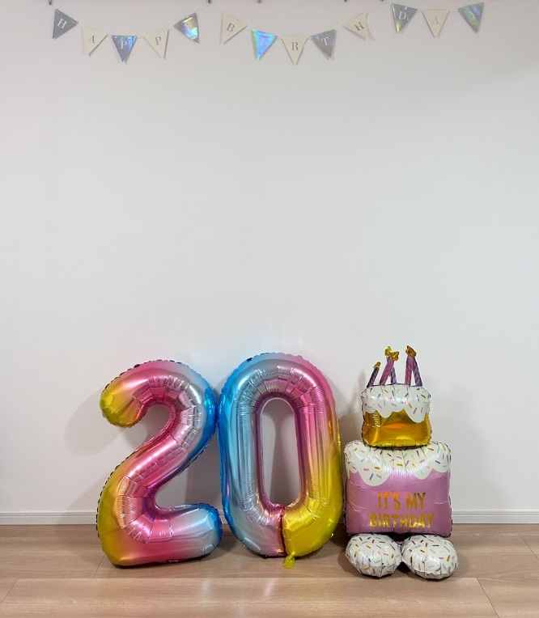

橘杏咲の立ち話もなんですから！ 第４回橘杏咲的“站着聊可说不完！” 第4回
こんにちは！橘杏咲です😼🎀
大家好！我是橘杏咲😼🎀
今月は11月！いよいよ2024年が終わるまであと2ヶ月…
这个月是11月！距离2024年结束终于只剩下两个月了……
涼しい季節になり、可愛い冬服も着られるようになってウキウキです🎶
天气转凉，终于可以穿上可爱的冬装了，心情超级雀跃🎶
10月は自分にとってイベントがたくさんあったのもあり、いつもに増して1ヶ月があっという間だったような気がします。
10月对我来说发生了好多大事，感觉这一个月比平时过得还要快，转眼就没了。
なんて言ったって10月は…
毕竟10月可是……
私の20歳のお誕生日だったんです〜！🎊👏🏻
我的20岁生日呀〜！🎊👏🏻
たくさんの方からお祝いの言葉をいただくことができて、本当に幸せな1日になりました☺️
收到了许许多多人的祝福，真的度过了无比幸福的一天☺️
Xのリプライなどでもたくさんのあたたかいお言葉をありがとうございました！！
在 X 的回复等地方也收到了大家满满的温暖祝福，非常感谢!!
そして、事務所に届けていただいたプレゼントやお手紙、全て受け取らせていただきました！一つ一つ噛み締めながら読ませていただきました。
而且，大家寄到事务所的礼物和信件我都全部收到了！每一封我都细细品味着认真读完了。
本当にありがとうございました。
真的非常感谢大家。
20歳の誕生日は、やはり今までの誕生日に比べて特別感がありましたね！
20岁的生日，果然和以往的生日相比有着不一样的分量与特别感呢！
19歳までの誕生日では、年齢を重ねたという感覚よりも、誕生日という「自分が主役のハピネスラッキーイベント」という気持ちが強かったんです。
19岁之前的生日，与其说是“又长了一岁”，不如说更强烈地觉得生日是一场“以自己为主角的幸福幸运大派对”。
ですが、20歳の誕生日は今までの人生を思い返して、大人になったな…というのを実感する1日でした。
但20岁生日这一天，我回望了至今为止的人生，真切地感受到“啊，自己变成大人了呢……”。
年齢の十の位が変わるってすごい変化ですよね！笑
年龄的十位数发生改变，真是个不得了的大变化呀！（笑）
20歳は今まで年齢という壁で制限されていた事柄のほとんどが解禁されるというのもあり、18歳の時の成人より大人になったという感覚が強かったです。
因为到了20岁，过去被“年龄这道墙”限制住的大多数事情都会一次性解禁，所以比18岁法律成年时更能真切感受到自己成了大人。
ある日の0時00分を境にやれることが増えるって面白くないですか！！人生をゲームと形容する人が居ますが、この設定はかなりゲームっぽいですよね(？)
以某一天的零点零分为界，能做的事情一下子变多了，不觉得很有意思吗!! 有人把人生比作游戏，这个设定还真挺像游戏的呢（？）。
いや、人生がゲームっぽいのではなく、ゲームが人生っぽいのでしょうか…??🤔
不对，也许不是人生像游戏，而是游戏像人生吧……??🤔
なんて、20歳初のコラムの初めでもいつもの橘脊髄思考を披露しつつ、色々とお話ししていきたいと思います。
像这样在20岁第一篇专栏的开头照例展示了一番“橘式脱口而出脑回路”，接下来就和大家聊聊各种近况吧。
そういえば！私にとってお誕生日に次ぐハッピーなことが！
说起来！还有一件对我来说仅次于生日的开心事！
なんとついに、約2年半行っていた歯列矯正が終了したんです！嬉しい😭！！
我坚持了大约两年半的牙齿矫正，终于大功告成啦！太开心了😭!!
今後のことを考えて高校2年生の頃から始めた歯列矯正ですが、やはり想像以上に大変なことがたくさんありました。
为了今后的发展，我从高二就开始做牙齿矫正，过程中果然遇到了比想象中多得多的辛苦。
ワイヤーを締めた後の痛みや口内炎は勿論、滑舌がうまく回らなかったり、見た目を気にしてモゴモゴ喋ってしまったりと色々あり、早く終わりたい…!と思う日々でした。
每次收紧钢丝后的酸痛和口腔溃疡自不必说，还有咬字不够利索、因为在意美观而忍不住含糊着说话等等，那段时间每天都在盼着“好想快点结束啊……！”。
けれど、歯列矯正を終えた今、本当にやってよかったと思います。これに尽きますね。
但现在结束了矫正，我由衷觉得“当初做了决定真是太好了”。千言万语汇成这一句。
ワイヤー表側矯正だったため、矯正期間中は自然と歯を出して笑うことが無くなっており口元を隠す癖がついてしまっていたので、やっと歯を出して思いっきり笑える！！という喜びが大きかったです。
因为我做的是唇侧钢丝托槽矫正，矫正期间不知不觉就不怎么露齿笑了，还养成了捂嘴的习惯，所以现在“终于可以尽情露齿大笑啦!!”的喜悦格外强烈。
これからは思いっきりにこーーっと笑って写真を撮ったり、お話をしたりできますっ！嬉しいです。
以后就能毫无顾忌地绽放大大笑容来拍照、和大家聊天啦！好开心。
人のにこーーっという満面の笑顔が大好きなので、私も自分の笑顔が見られるのが嬉しいです笑✌🏻✨
我最喜欢看别人展露灿烂的满面笑容了，现在能看到自己开怀大笑的样子也觉得很开心（笑）✌🏻✨
いやあ、本当によかったです。長い時間をかけてここまで綺麗にしていただいた矯正歯科医さんには感謝でいっぱいです。ありがとうございます！
哎呀，真是太好了。非常感谢花了这么长时间帮我把牙齿矫正得这么整齐的牙科医生。真的非常感谢！
10月のコラムでお話ししましたが、10月はイベントがたくさんありましたね。
正如10月专栏里提到的，10月有好多活动呢。
皆さんは10月、楽しみましたか〜？
大家10月过得开心吗〜？
私は文化祭に行ったりとイベントをエンジョイしつつも、大学の課題に追われる日々が始まりました🥲🥲
我一边去逛了文化祭、享受各种活动，一边也开启了被大学作业追着跑的日常🥲🥲
10月になり大学の秋学期が始まった訳ですが、やはり楽しいですね〜！
进入10月，大学的秋季学期正式开课，果然还是挺开心的呀〜！
大学があると早起きして朝から活動するので、1日も長く感じますし、何より大学で友人と会えるのが嬉しいです。
有课的时候就会早起从上午开始行动，一天都显得充实漫长了不少，最重要的是能在学校见到朋友们，特别开心。
朝早く起きて、毎日友人と会って、授業を受けて課題をこなす…これって心身の健康にすごく良いですよね！！小中高生の頃は当たり前でしたが、この当たり前の生活が子どもの健やかな成長に強く影響しているのだろうな…。
每天早起、和朋友见面、上课、完成作业……这种节奏对身心健康真的太有益了!! 读小学初中高中时觉得理所当然，现在才意识到，正是这种理所当然的规律生活深深滋养了孩子们的健康成长呀……
大学生になり、当たり前が不規則になったことで早起きが辛くなったりと体力の衰えを感じるのがいやですね。
上大学后，原本理所当然的规律作息变得紊乱，连早起都变得痛苦，切身感受到体力下滑，真让人不爽呢。
大人だから強制しないけど、自制できるよね？自分でコントロールできるよね？ってことですよね。はいぃ、頑張ります、。💧
这就是所谓“你已经是大人了，没人强迫你，但你自己能管好自己、做好自律吧？”的考验呢。好吧，我会加油的……💧
ちなみに10月のコラムで掲げた目標、「健康第一」は守れていますよ！
顺带一提，10月专栏里立下的目标《健康第一》，我可是有好好守住哦！
慌ただしい日々が続いているのですが、予定がないよりある方が楽しいので、大変より楽しい方が勝っています。なんでも楽しいに変換できるのが私のいいところですからね！
虽然忙碌的日子一直在持续，但比起闲着没事，还是排满日程更开心，所以快乐远远胜过辛苦。能把任何事情都转化成乐趣，可是我的优点呢！
あとは適度に力を抜けるのも良いところなのでね！
还有懂得适度放松，也是我的长处嘛！
肩肘張らず、このまま大学もお仕事も楽しんで過ごしていきたいと思います。
我想就这样不紧绷、放轻松，继续享受大学生活和工作。
また締めみたいに！！すぐ締めみたいな雰囲気にする謎癖はやめたいです。
又写得像结语了!! 我真想改掉动不动就营造收尾氛围的奇怪毛病。
また、お誕生日の話に戻ってもいいですか！！戻ります！！
可以再回到生日的话题吗!! 那我就绕回去啦!!
お誕生日当日は、家族でご飯に行きました。
生日当天，我和家人一起出去吃了饭。
私にゆかりのある場所でご飯を食べて、初めてのお酒をいただいて、父と母からファーストジュエリーをいただきました。
在对我来说很有纪念意义的地方吃了饭，喝了人生第一口酒，还收到了爸爸妈妈送的“人生第一件珠宝”。
帰宅後は、たくさんの友人からいただいたお誕生日おめでとう！のメッセージを読んで一つ一つ返すというなんとも幸せな時間を過ごしました。
回家之后，我逐条阅读了众多朋友发来的生日祝福，一条一条认真回复，度过了一段无比幸福的时光。
本当に、幸せという言葉じゃ足りないくらいの幸せを感じましたね。
真的感受到了连“幸福”这个词都不足以形容的巨大幸福。
これが究極の幸せなんだあ…。
原来这就是终极的幸福呀……
一生忘れられない、人生に一度の、最高の20歳初日でした。
这是一生难忘、人生仅有一次的、最棒的20岁第一天。
10月12日以降も、大学や、大学外で会う友人、お仕事の現場の皆さんからたくさんのおめでとうをいただきました！！
10月12日之后，在大学里、校外见面的朋友，还有工作现场的各位也都送上了数不清的祝福!!
年々、おめでとうの数が増えているようなそんな気がして、私はなんて幸せ者なんだ。とここでも幾度目の幸せを感じていました笑
总觉得每年收到的“生日快乐”都在变多，心想“我怎么能这么幸福呀”，在这里又不知第几次被幸福感包围了（笑）。
おめでとうの言葉以外にもたくさんのプレゼントを…。
除了祝福的话语，还收到了好多礼物……
私のために選んでくださったんだと思うと全てが愛しく、全てが宝物ですね。
一想到都是大家专门为我挑选的，就觉得每一份都无比可爱，全都是我的宝物。
わわ、大好きと幸せが止まらない、。
哇哇，“最喜欢”和“好幸福”根本停不下来了……
言語化するとその時の幸せが蘇ってくるようで、コラムを書いている今も幾度目の幸せを感じています。なんだか文字が暖色に見えてきました。
把这些化成文字后，当时的幸福感仿佛又重现了一般，写专栏的此刻我也在反复回味着幸福。感觉眼前的文字都泛着暖色调了。
これがハピネスパワーなのか…。🔆✨
这就是幸福能量吗……🔆✨
あっ！流れでちらっと書きましたが、初お酒も飲みましたよ！大人を実感するいちばんの要因はここにあるかもしれませんね…。
啊！刚才顺带提了一句，我也喝了人生第一杯酒哦！让人最真切感到“变成大人了”的瞬间，大概就在这里吧……
中高の友人と居酒屋に入った時は、余計に時の流れを感じました。大人じゃんっ！大人じゃんっ！と全てが新鮮でドキドキしてました笑
和中学、高中的朋友一起走进居酒屋的时候，更是深切感受到了时光的流转。心里一直念叨着“好大人啊！真成大人了！”，一切都新鲜又让人心跳加速（笑）。
きっと、この先1年は「大人じゃんっ！」が口癖になりそうです。
接下来这一年，“好大人啊！”八成会成为我的口头禅。
プレゼントでも色々な方から様々な種類のお酒をいただいたので、少しずつ詳しくなっていくのだろうな、などと思ったりも。
生日礼物也收到了大家送的各种不同种类的酒，心想以后我大概也会一点点变得懂酒起来吧。
大人じゃんっ！
真成大人了呢！
ね。そういうことです。
嗯，就是这么回事。
(橘家の愉快なバースデーデコレーションを添えて)
（附上橘家充满欢乐气息的生日装饰照片）

今回はハピネスバースデートークでいっぱいになってしまいました！
这一回满满当当全都是幸福生日话题！
いや、正直誕生日によるハピネスパワーのせいで何について話しても幸せ！大好き！らぶ！しか語彙が無くなってしまいそうなので11月の目標で締めたいと思います。
说实话，因为生日带来的幸福能量太强，现在不管聊什么我都快只剩下“幸福！最喜欢！爱了！”这几个词了，所以就用11月的目标来收尾吧。
11月の目標はズバリ〜
11月的目标就是——
『マルチタスクをこなす！』です。
《搞定多任务处理！》
秋学期も慣れてきて、課題の量も増え、小テストや中間テストも加わってきました。
秋季学期渐渐步入正轨，作业量增加了，小测验和期中考试也陆续袭来。
課題とテスト勉強、そしてお仕事とマルチタスクをこなせるよう、頑張りたいですね！苦手な方も多いと思います。私も苦手です。一緒に頑張りましょ〜！！！
我想努力做到能够同时兼顾作业、备考和工作！应该也有很多人不擅长多任务处理吧，我也不擅长。大家一起加油吧〜!!!
ここまで読んでくださり、ありがとうございました！
非常感谢大家一直读到这里！
これからもっと寒くなるので体調には気をつけてお過ごしください！！
接下来天气会越来越冷，请大家一定要注意保重身体!!
テーマや質問、感想などお待ちしております！！🤍
期待大家的主题建议、提问和感想哦!!🤍
ではっ
那么下次见啦！
橘さんに質問！向橘小姐提问！
Q：『五等分の花嫁＊』のリリー役で初めて橘さんを知りました。英語がペラペラだなと思いましたが、ハーフだったり帰国子女だったりするのでしょうか？（東京都・かいだん）
问：我是通过《五等分的新娘＊》中的莉莉一角第一次认识橘小姐的。觉得您的英语说得非常流利，请问您是混血还是归国子女呢？（东京都·かいだん）
かいだんさん、ご質問ありがとうございます！
かいだん，感谢你的提问！
まっっっっっっったくの、ドが付く日本人です。中高生の頃は苦手教科が英語と数学のド日本人です👍🏻✨
我完——全是个彻头彻尾的土生土长日本人。初高中时最不擅长的科目就是英语和数学的纯正日本人👍🏻✨
小中学生の頃に学校のプログラム的なもので少しだけ海外へ行ったのですが、楽しかった記憶しかないですね、。楽しかった思い出だけ持ち帰ってきて、英語力は持ち帰ってこなかったみたいです…。
小学、初中时参加过学校的类似游学项目短暂出过国，但只留下了玩得很开心的记忆……看来我只把快乐回忆带回来了，没把英语能力带回来……
なので、そう言っていただけて本当に光栄です！！
所以能得到您这样的夸奖，我真的深感荣幸!!
映画が公開されるまでの期間も不安でいっぱいだったのですが、たくさんの方に英語よかったよ！と声をかけていただいて驚きと安心と嬉しさでいっぱいです笑！！
电影上映前我一直满心不安，没想到上映后有好多人跟我说“英语配得很好哦！”，我真是又惊讶又安心又开心（笑）!!
もちろん、台本に書いてある英語を読んでいるだけなので本人は全く英語を喋れません。
当然啦，我只是照着台本上的英文念出来而已，本人其实是完全不会说英语的。
今は大学で別の言語を学んでいるのですが、いずれ英語もマスターしたいですっ！！本当です！！！
虽然现在在大学里学的是另一门外语，但总有一天我也想把英语拿下!! 真的!!!